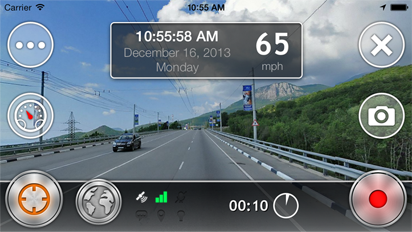
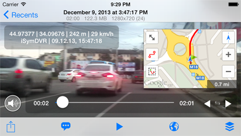

OsmAnd DVR
Car Video Recorder + Maps




FEATURES
- Non-stop video recording
- Recover video recording after returning from the background mode or after incoming call
- Password protection
- Simple user interface
- Location, speed and altitude reading
- Customizable subtitles in SRT format + Export to Camera Roll with built in subtitles
- Power saving mode + Black screen mode
- Speed limit feature
- Four Map providers, layer switching, traffic layer
- iOS 7 supported
- Still photos while recording the video
- Favorites
- Built-in video/photo gallery
- Built-in Help
- GPX track writing
- Portrait and landscape modes
- Car mode
- Web server
- iPad supported